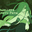

 Dweller's Empty Path
Details
| Playtime | Not Played |
| Last Activity | Never |
| Added | 12/31/2023 7:19:00 |
| Modified | 12/31/2023 8:28:44 |
| Completion Status | Not Played |
| Library | Itch.io |
| Source | itch.io |
| Platform | PC (Windows) |
| Release Date | 7/10/2020 |
| Community Score | |
| Critic Score | |
| User Score | |
| Genre | Adventure Indie Role-playing (RPG) |
| Developer | temmie |
| Publisher | temmie |
| Feature | Single Player |
| Links | Wikipedia Itch Wikia Twitch |
| Tag | |
Description
 A small RPGMaker game exploring the life of a lost being from another world.
A small RPGMaker game exploring the life of a lost being from another world.
Yoki wakes up from a nightmare and has some difficulty falling back asleep, so she decides to go on a short walk to clear her mind.
As you play as Yoki, you can choose to end the game at any time by returning to her bed and attempt another shot at getting some much needed rest.

Tem here!!!
Thank you for taking an interest in my next little (experimental) game!!! As you can see, much like Escaped Chasm, there isn't a whole lot you do besides walking around and talking to NPCS and objects (and also sometimes illustrations appear.)
But!!!
It's much longer this time!!! Even though I'd say the game is around roughly 1~2 hours.
This game has new added features since the last game, including the ability to save and pressing the shift button to go faster. (wow!!!) There's no animated cutscenes this time...but there are over 100 illustrations I made for this! I hope that makes up for not having any animation..

This game follows after Escaped Chasm, so I recommend you play that before playing this! (Though, you don't really have to.. You'll still be able to understand everything that's going on even if you don't play it.)
Also, despite it having a different name, I still consider this to be apart of the Escaped Chasm series. I couldn't name it Escaped Chasm 2 because of the joke game I included in Escaped Chasm (1)'s file folder.
Since even I got lost while testing the game, I've included a map in the game folder, and also some other little extra goodies and such!

Story, Characters, Concept, Illustration, Pixel Art, Animation by:
Temmie Chang
Music by:
Camellia- Arrangement & Production + Melody/Chords
Toby Fox - Melody/Chords
Temmie Chang - Melody/Chords
Special Thanks:
Archeia - font script use/RPGMaker troubleshooting help
Yanfly - use of MessageCore and CoreEngine pluggins
Chris Maltby - initially designed with gbstudio in mind
Sasuke Kannazuki - message sound plugin
Shawn Martins- playtest
Jos Venti - playtest
Joe Ryan - playtest
Allie Mehner - playtest
Sound programs:
bfxr - sound effects
pxtone - (Tem's) music
---
ABOUT MAC:
When I was having the MAC version tested, my friend wasn't able to get the game to run, so I thought about excluding this version. However, I've been told that it may be possible to run with some kind of administrative powers..? So, just in case I decided to include the file now to download (I'm sorry if you can't get it to work/if it's buggy(I haven't been able to test it)...)
--
The soundtrack is available on these platforms located here!
And also on bandcamp!!